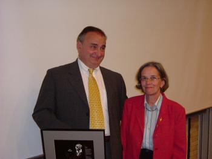

| |
|
|
Andr� Deledicq, France
![[Andr� Deledicq]](erddeledicq3.jpg)
Andr� Deledicq receives his award from Professor Hyman Bass, President of ICMI, in Copenhagen on Tuesday 06 July 2004.
Citation
Andr� Deledicq has established an enviable record in mathematics education.
While he is known internationally for his work with the game-contest Kangourou,
he has also made significent contributions in writing, publishing,
teaching and lecturing.
In 1991, he created, on the pattern of the Australian Mathematics Competition, the contest
Kangourou, with 120,000 participants. By 1994, he founded the association Kangourou Sans Frontieres
with other European and South American countries, and the enrolment pass quickly one million annually.
By 2003, more than 40 countries and 3 million students participate. He has made Kangourou, and its
associated activities, one of the largest and certainly one of the most innovative competitions in the world.
But this is not his main contribution. His major strength and interest is in
popularising mathematics at the school level, often through mathematical
publications. To this end he has written and published, through a company he
founded, a vast number of books, booklets, and posters that are cleverly
written and appealing, and that have been distributed to hundreds of
thousands of students.
Response
Mr President, dear colleagues, dear Peter, ... it's of course a great honour
for me to receive the Paul Erdös Award.
I am deeply moved and, and when I read the names of previous awardees, when I see Patricia and Warren,
I believe this is a dream ("I have a dream, my brothers!").
More precisely, I would make two comments:
The first will not be a surprise for those who personally know me. I am not the one
who deserves the Erdös prize! But above all my wife H�l�ne, who has fashioned me for many many years;
also my children, Jean-Christophe and Jean-Philippe, who have been working with me for fifteen years.
Without them, without her, I would be nearly nothing and I tell them "thank you JC, thank you JP, thank you H�l�ne.
The second comment is rather mathematical: just like many of you, I spent a large part of my life
enjoying problems: to solve them and to submit some of them all around me, to teachers, students,
teenagers, children, ... people.
Now there is one thing I know: one of the most beautiful things to experience is a child thinking
hard, looking for solutions and the moment when this face suddenly shines and when his mind shouts out.
In fact, this is our future being played out at the moment ... our future of men and women who do
seriously enjoy the work of their grey cells and who look for
"the honour of the human mind", as mathematicians like to quote Jacobi.
With similar noble words, strangely, in this kingdom of Denmark, let me remind you of the famous monologue:
"To solve or not to solve, that is the question
whether 'tis nobler in the mind to suffer
the slings and arrows of outrageous challenge
or to take arms against a sea of problems,
and, by opposing, end them ....
In order to ensure this future and the continuation of our pleasure, I will wish a long life to the WFNMC and to the ICMI, to all of us and to Paul Erdös ideas,
since without him we wouldn't be here together, today. THANK YOU.
Andr� Deledicq

Andr� Deledicq with H�l�ne after the presentation.
![[Andr� Deledicq]](erddeledicq.jpg)
Andr� Deledicq with his son and colleague Jean-Christophe, at the old wall
of Toulouse in July 2001.
|
|